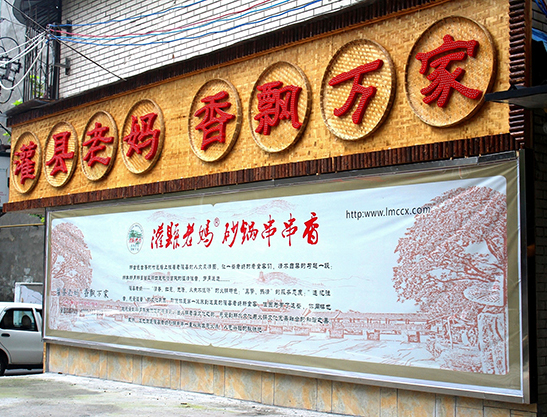

关于灌县老妈砂锅串串香
灌县老妈砂锅串串香是成都麻辣联盟餐饮管理有限公司旗下知名品牌起源于素有“天府之国，掌上明珠”之称的中国道教文化发祥地—四川·都江堰。灌县老妈砂锅串串香在都江堰的发展已有20余年。在经过灌县老妈三代人的潜心经营探索，从最早在都江堰杨柳河边上的路边小摊发展到今天公司化经营，是都江堰最早把串串香“登堂入室”的串串店，是串串香行业发展创新的先驱之辈。灌县老妈后人在祖辈留下的宝贵秘方基础上吸收川、渝两地多派串串底料秘方，独创老妈特色养生锅底。秉承做绿色食品的经营之道，遵循市场发展规律，灌县老妈已遍布大江南北，成为享誉全国的知名品牌。
品牌介绍
在串串香事业与火锅行业日夜激烈竞争的这几年中，灌县老妈打破传统经营模式，进行资源整合，优化进货渠道减少中间环节，在保证质量的前提下，有效大幅度的降低成本让利于消费者。在服务上不断的进行自我提高，向同行业标杆兄弟企业学习交流，在味道上，老妈人不断创新、不断改良、与时俱进，做最符合消费者健康的美食，使消费者来到灌县老妈就爱上灌县老妈，吃串串不二的选择地。
灌县老妈在各级政府有关部门的支持下，在兄弟企业的交流中，灌县老妈人紧紧抱着一团，秉承“灌县老妈，香飘万家”以 人为本，养生食品”之经营理念。灌县老妈人在技术上做到不断创新、不断升级，在质量上做到精益求精，在经营理念上，不断学习、不断实践，灌县老妈依托于各种资源成功的在神州大地奇迹般的一夜崛起近百家的加盟店。弹指一挥间，响誉祖国大疆南北。成为国内最具有实力的串串香连锁加盟企业之一，加盟商遍布神州大地，真正的做到“灌县老妈，香飘万家”。
80年代四川都江堰的杨柳河边，住着一位石姓人家。每天都能看到这家的老妈推着一辆破旧车儿在石子路边摆摊卖着串串香。支起一个瓦罐，舀几瓢江水，撸上把干柴生火，在罐里加入蔬菜，放入海椒、花椒等调料，然后用竹签串起即可食之，那滋味美不可言。兼之石老妈乐善好施，经常会留下一些串串儿支助乡邻和孩子们，久而久之远近知晓，人们都亲切的称她为“灌县老妈”。
老妈起源
那一年，老妈的小孙子二十岁，跟许多人一样向往外面的世界，向往远方大城市的繁华。于是他背上行囊，和其他怀揣梦想的年轻人一起，头也不回地离开了这个生养他20年的地方，踏上北漂的道路，没有犹豫和不舍，只有满心的痛快和对财富的憧憬。故乡在他的记忆中就只有破旧、贫穷，还有那个让他在同学朋友面前抬不起头的串串香摊儿。
光阴转瞬即逝，当年的那个毛头小伙已成中年男人。城市的繁华并非想象的那样美好，愿望却依然遥远，未来该何去何从!他带着痛苦而迷茫的心情在街头游荡，身边是灯红酒绿，却找不到自己的方向。无意间看到一处卖串串香的店面，他不禁思念起自己的故乡，还有故乡的亲人，不由自主迈了进去，希望能找寻记忆里的味道。没想到，却是满口的干辣油腻，远不如自家的味道。他感叹着大城市里的食物与人一样浮躁，就像没有时间和耐心去烹调。沉静下来，一个与串串香有关的想法，在脑海中萌芽。
他振作精神，回到家乡，重新收拾起自家的串串香事业，2008年12月10日 “灌县老妈”串串香的第一家店正式开业。多年来，“灌县老妈”不断改良，摒弃瓦罐，代以砂锅烫涮的健康方式，并将老妈30多年制作串串香的配方与川渝周围其他底料相融合，独创了“灌县老妈”特色养生锅底。同时大量使用了竹篱原木等装饰材料，古朴天然，更能体现原生态的草根美味的精神。
看尽浮华，方能回归真实，“灌县老妈”的故事就从这个不足60平米的小店开始，时至今日，老妈加盟店已走向大江南北。
老妈的故事仍在流传……
